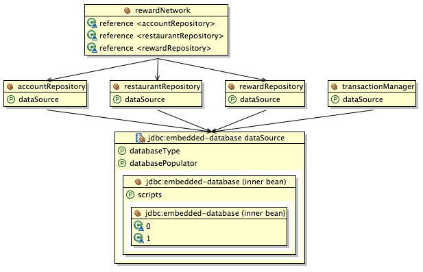

In this lab you will gain experience with using Spring's declarative transaction management to open a
transaction on entry to the application layer and participate in that transaction during all data access.
You will use the @Transactional annotation to denote what methods need to be decorated
with transactionality.
What you will learn:
How to identify where to apply transactionality
How to apply transactionality to a method
Specific subjects you will gain experience with:
The @Transactional annotation
The PlatformTransactionManager interface
The <tx:annotation-driven/> bean definition
Using transactional integration tests
Estimated time to complete: 45 minutes
The goal of this lab is to declaratively add transactionality to the rewards application. The lab will be divided into two parts. In the first part you will add transactionality to the application and visually verify that your test case opens a single transaction for the entire use-case. In the second section you will experiment with some of the settings for transaction management and see what outcomes they produce.
Spring offers a number of ways to configure transactions in an application. In this lab we're going to use a strategy that leverages annotations to identify where transactionality should be applied and what configuration to use.
Find and open the RewardNetworkImpl class in the
rewards.internal package. In that class locate the
rewardAccountFor(Dining) method and add an
@Transactional annotation to it (TODO 1). Adding the annotation will identify
this method as a place to apply transactional semantics at runtime.
Before we are going to tell Spring to start looking for the @Transactional
annotations, we first need to configure the transaction management infrastructure. Navigate to
the system-test-config.xml file and complete TODO 2 by
wiring up a DataSourceTransactionManager. Remember to set the dataSource
property on this bean definition.
Finally, find and open the application-config.xml file in the same package. In
this file you'll need to tell the container to look for the @Transactional
annotation you just placed on the RewardNetworkImpl class. To do this add a
bean definition for <tx:annotation-driven/> (TODO 3). Make sure to populate
the transaction-manager attribute on that bean definition with a reference to a
bean named 'transactionManager'.
![[Note]](images/note.png) | Note |
|---|---|
If no value is specified for the transaction-manager attribute, the
<tx:annotation-driven/> tag will look for and autowire a bean named
transactionManager.
|
Go to the Spring Explorer view in Eclipse and show the graph of the
tx-1-start -> Beans -> system-test-config.xml. If you configured your application
context properly the graph should look like Figure 1.
|  |
Figure 1: The configuration of the context
If your graph looks correct, you've completed this step. Move on to the next one.
Verify that your transaction declarations are working correctly by running the
RewardNetworkTests class from the src/test/java source
folder. You should see output that looks like below. The important thing to note is that only a
single connection is acquired and a single transaction is created.
... Acquired Connection [org.hsqldb.jdbc. jdbcConnection@59fb21] for JDBC transaction ... Switching JDBC Connection [org.hsqldb.jdbc. jdbcConnection@59fb21] to manual commit ... Initiating transaction commit ... Committing JDBC transaction on Connection [org.hsqldb. jdbc.jdbcConnection@59fb21] ... Releasing JDBC Connection [org.hsqldb.jdbc. jdbcConnection@59fb21] after transaction
If your test completes successfully and you've verified that only a single connection and transaction are used, you've completed this section. Move on to the next one.
Setting up Spring's declarative transaction management is pretty easy if you're just using the default
propagation setting (Propagation.REQUIRED). However, there are cases when you may
want to suspend an existing transaction and force a certain section of code to run within a
new transaction. In this section, you will adjust the configuration of your
reward network transaction in order to experiment with Propagation.REQUIRES_NEW.
Find and open RewardNetworkPropagationTests from the
rewards package in the src/test/java source folder. Take a
look at the test in the class. This test does a simple verification of data in the database, but
also does a bit of transaction management. The test opens a transaction at the beginning,
(using the transactionManager.getTransaction(..) call). Next, it executes
rewardAccountFor(Dining), then rolls back the transaction, and finally tests to see if
data has been correctly inserted into the database. Now run the test class with JUnit. You'll see
that the test has failed because the rollback removed all data from the database, including the
data that was created by the rewardAccountFor(Dining) method.
The rewardAccountFor(Dining) was created with a propagation level of
Propagation.REQUIRED which means that it will participate in any transaction that
already exists. When the manually created transaction was rolled back it destroyed the data from the
@Transactional method. In real life, it actually would generally be appropriate for this method to be
marked as Propagation.REQUIRED, with the test being considered inappropriate, but
this affords us a chance to test the results of changing the propagation settings.
Find and open RewardNetworkImpl and override the default propagation behavior
with Propagation.REQUIRES_NEW (TODO 4). Run the
RewardNetworkPropagationTests. If you get the green bar, you have verified
that the test's transaction was suspended and the rewardAccountFor(Dining)
method executed in its own transaction. You've completed this section. Move on to the next one.
When dealing with persistent data in a test scenario, it can be very expensive to ensure that preconditions are met before executing a test case. In addition to being expensive, it can also be error prone with later tests inadvertently depending on the effects of earlier tests. In this section you'll learn about some of the support classes Spring provides for helping with these issues.
First, back out your propagation changes from the previous section (change the propagation back to
Propagation.REQUIRED instead of Propagation.REQUIRES_NEW. This
is the appropriate propagation setting for this method.
Find and open RewardNetworkSideEffectTests from the rewards
package in the src/test/java source folder. Take a look at the two tests in the
class. You'll notice that they simply call the rewardAccountFor(Dining)
method, pass in some data, and verify that the data was recorded properly. Now run the test class
with JUnit. You'll see that the second test method failed with an error that Annabelle's savings was
8.0, when 4.0 was expected. The reason we see this is because the data committed from the first test
case has violated the preconditions for the second test case.
The good news is that Spring has a facility that can help you to avoid this corruption of test data in a
DataSource. You can simply annotate your test methods, or even your test class
itself to apply to all methods, with @Transactional: this wraps each test case
in its own transaction and rolls back that transaction when the test case is finished. The effect of this is
that data is never committed to the tables and therefore, the database is in its original state for the start
of the next test case. Now annotate the RewardNetworkSideEffectTests class with
@Transactional (TODO 5). Run the test again and notice that there is now a
green bar. Because the changes made by the first test were rolled back, the second test got the results it
expected.
Congratulations, you're done with the lab!